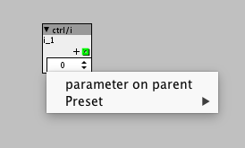

I wish there was a way to adjust Audio Config objects via inlets while the patch is running!
Improvements/Wishes for the patcher
jaffasplaffa
#291
After working a lot in PD for the last month or two..... I really really think that we need to be able to have the object browser visible all the time. That is really something I am missing badly on Axoloti. It is such a simple thing and it makes the workflow much better, imo.
thetechnobear
#292
it would be useful, if you could explain what precisely you want to change in the audio config...
as they are implemented differently - input gain?
(it should also be noted some of the 'limitations' e.g. the selection available is due to the codec hardware... they are not arbitrary)
ive been using PD a lot too, and I never use the object browser... just takes up way to much UI space.
I actually miss in Axoloti, the ability to just type in the names directly... though in practice with our hierarchy, that would need to be with auto complete (a la reaktor)
I guess, it all depends on your familiarity with the objects, and perhaps how much you use the mouse vs keyboard... as a developer I'm more a keyboard kinda guy.
jaffasplaffa
#293
Resizable?
I think that is cool feature too. But then you could simple just push the red cross and close the browser again and be back to the state you like. But it would open up for others who like the browser to be optional fixed.
I think how it is now dictates a fairly rigid workflow with not really any options for adapting it to your liking.
I use the object browser all the time in PD. For many reasons:
- Easy to get to your patches, to find abstractions etc.
- If you want to open the folder you are working in, in a Finder window, you just dobbelt click the folder from the PD browser and you are taken directly to the folder without the need to open Finder and browse your way to it. You can just dobbelt click and you are in the folder. But I guess this different with Axoloti.
I really like the browser, but I guess is also depends on workflow. My workflow is best with object browser.
axoman
#294
The choices are fine, no problem there, but there's no way to connect any form of external control so that when the patch is live, the gain can be set by the user. I realised yesterday, when I was playing around with the compressors. At first, I wondered what the heck was going on because for some reason my audio config had changed. I didn't realise at first, but then I remembered the Audio Config objects. Sure enough, the gain was set super-high, and it got me wondering, what would happen if this had been standalone?
I'd be screwed, cause there's no inlets to select from the avialable options, nor will it allow selection even with the patcher available - cause they get locked. So it would be great if they didn't get locked, and had inlets so that we could incorporate gain control/selection into our designs.
thetechnobear
#295
not quite sure what you mean... I'm assuming you mean the help->browser... (?) (and list objects is awful).. this as such doesn't give you objects, just really a file browser.
but as you say, some of the difference , is to do with the 'simplicity' of PD, and its file based approach, which is pretty inflexible e.g. poor namespace support, no meta information like description/
I don't personally like free floating windows, I much prefer them docked, but that requires a bit of a change in the axo UI, also a permanently open windows basically necessitates drag n drop... rather than the current 'context' approach.
actually, except the direct typing of objects name... I think PD is a good example of how not to design a UI... connecting wires is painful for what is a really common operation.
I think both Reaktor and Max 7, are much better inspiration sources ... Max in particular these days is really slick... its a real shame Max is not available on all these platforms, id drop PD in a heartbeat.
anyway, Axoloti is improving all the time, I'm sure these things will get there one day.
we know the browser needs a bit of an overhaul... and that becomes more pressing, as the object count increases
jaffasplaffa
#296
I mean an object browser that can be fixed, so you dont have to push space search... push space search... push space search...... and so on...
Just leave the browser open, write the object name push enter.... and so on... If you want to find another one, clear last search and enter new search name. Or just browse around and dobbelt click what you want to load.
One thing that could be done to Axoloti that might be easy to integrate:
You can all ready now drag & drop .axs objects. But what about adding drag & drop for .axo's also? Then one could use the regular filebrowser, Finder for example and drag everything in from there?
I think that might work.
I think one of the reason for PD sparse GUI is cpu usage. I think that is also one of the reasons there are no dial knobs in vanilla, only in Extended. A knob and a fader does the same, so no need for 2 devices that essentially does the same. Also a fader is much easier to make than a dial, I guess. I think the goal in PD is to keep it as simple as possible, to keep as low CPU usage as possible.
I only played with Max very little, but not recently. I like Pure Data cause it is open source, like Axoloti and it is free. Free is GOOOOOD  And I'd rather pay with the time I have to spend learn these free, open source programs than spending a lot of money on programs that is easier to use. But you pay money for the "easy to use stuff" I guess. And I'd rather pay with my time building stuff myself.
And I'd rather pay with the time I have to spend learn these free, open source programs than spending a lot of money on programs that is easier to use. But you pay money for the "easy to use stuff" I guess. And I'd rather pay with my time building stuff myself.
Yeah, I wrote Johannes a little while ago and it sounded like there was some development on the GUI going on, so we will see where it ends up But some kind of "fixed" browser is high on my wishlist, it doesnt necessarily have to be identical to how PD works.
jaffasplaffa
#297
Another thing I am really missing more and and more. A simple thing as copying values from one parameter to another. This stopped working in the latest release. I know it has been adressed for the next one, but it is a basic feature that I normally use 100+ times a day. So really missing that one too.
@thetechnobear any idea about when next release might be?
thetechnobear
#298
yeah, as I said we don't support dragging of objects, only subpatches....
(they are completely different from a coding perspective)
next release, is still a way off - Johannes is working hard on it, and I'm planning to help out after my current commitments in august... so no date, its going to be at least a 'few months' yet .. and don't take that as a firm few months either 
also, I should point out, many things are changing under the hood , so don't expect too much on the UI, many of the things being changed are to help for the future... and other things.
axoman
#299
Please let the ability to freely set the master bit-depth and sample rate of Axoloti be one of them (as well as the ability to allow the user to select it while the patch is live using inlets). Basically just making some of the more obvious under-the-hood settings available for switching live by the user, while a patch is running and away from the computer.
thetechnobear
#300
(I think) unlikely to be done for axo directly as there are quite a few pre-calculated/hard coded things for 48k SR, so changing this would require a lot of work. this has been discussed previously, with regards to creating VSTs from Axo.
again, whilst some things can be changed without performance issues, others cant.
remember, many things that cant be changed currently are that way, so that the compiler can produce more efficient (=faster) code, make all things flexible and things get slower (= you can make less complex patches) ... its a trade-off.
also remember unlike a PC (etc) , Axo does not have the cpu power (or toolchain) to compile on the board, it has to use a PC to do this heavy work (like arduino, or any stm32f based product)
that said, I know Johannes is keen to breakdown the EDIT/LIVE barrier... similarly we have talked about making the difference between parameter and attributes a little less 'technical'.
the general goal, is to speed up the develop/test/play cycle for patch development.
axoman
#301
Thanks for the heads-up, Mark, good to hear what's cooking-up behind the scenes 
BTW, did you see my other reply? I replied but I think you might have missed it. So does that apply to what I asked about adjusting the gain as well, or would that be possible?
Regards wanting to adjust the sample rate, there was really three reasons for that. The main reason is because before I discovered Axoloti, I was looking into developing a sort of hardware 8-bit tracker using an Arduino. Obviously it's ideal for 8-bit stuff, but when I saw Axoloti, I thought wow, if it can manage all that powerful processing at 48KHz, imagine how huge and complex things could be if you were only demanding the lower bit-depth and rates used for the 8-bit stuff. So I had this crazy idea to make a huge hardware 8-bit tracker using Axoloti 
I'll just have to give that idea a miss, or maybe do that specific project with Arduino as originally planned.
The second reason, I suppose, is because I've been spoiled by that sampler I mentioned in the other thread, the Yamaha A3000. I've had it a while and there's the ability to monitor live while you switch the sample-rate, so that means you get to hear exactly what the result is going to sound like even before you've captued it. I just thought that would be awesome to have in Axoloti for use with sampling etc. It would also serve (the third reason) to lower CPU demands at lower sample rates and allow larger projects.
It's a shame that can never happen, but they're the reasons I wanted it, would have been very versatile!
thetechnobear
#302
gain - that's possible, but its sent to the codec , so I don't think you would want to change it rapidly, and its very 'stepped.' (not sure if it would cause audio glitches, id have to try to see)
.. its more a coarse adjustment. e.g. like switches on mixers used for line/instrument level.
but yeah, I plan to add it, just not got around to it really.
(anyone could do it if they want to, just lift the code out of the relevant config object, and convert it to a parameter or inlet - just be careful to keep it in the relevant range!)
8bit is depth, not SR... and given the processor is 32bit, unless you do some special algorithms, its not going to save you anything.
I think (from memory, and to lazy to go recheck codec datasheet) the codec supports other sample rates, so its possible, its just you wont be able to use any objects that use SR dependent data/algorithms, ... as I said this was discussed in a thread on VSTs if you want more info.
.. and yeah, real time switching, would not be worth the overhead in cpu processing.
see, the thing is... what is clever about what Johannes has done, is his bringing the native DSP coding necessary for these kind of boards to everyone, before it was just (embedded) developers. and these boards have huge potentially because they are cheap/low power/flexible...
That's why I love Axoloti, its got a lovely niche, for creating small instruments easily ... sure you can do bigger things too, but like all complex things, your gonna have to roll your sleeves up
axoman
#303
Great stuff, although I think I'll give creating it myself a miss in case I break something (as it's controlling an actual on-board hardware amplifier). I don't need it 'right now' so no worries there, but I would definitely incorporate that into any standalone effect unit or pedal I make with Axoloti - or anything that takes an audio input really.
Dear Mark, even axoman knows that 
Understood, and I totally agree. I don't know of anything as flexible as Axoloti that allows such powerful creations with such a little amount of knowledge required.
jaffasplaffa
#304
This is probably the one feature I could use the most. It have been mentioned many many times by other users too and I really really would like to see this implemented in next release, as I have mentioned several times before.
Add midi cc to the ctrl/i, please!
Or create a new object ctrl/i cc so you can use it with midi cc.
Please! This is a super simple thing to add and would make Axoloti a lot more fun using. I know some people say "what about scaling, since ctrl/i goes a lot higher than 127 which is the limit of midi CC".... I'd say let's just TRY IT and see if it is an actual problem? Which I personally dont believe it is. You can scale the "ctrl/i cc" to anything using math, as you can with any other object in Axoloti, like for example the dials.... So I dont believe this is going to be an issue. If so, I'll be the first to let you know
@johannes
I know you are working on some new stuff... Is this going to change as part of the new stuff that you are working on?
lokki
#305
i don't get it, can you explain a little further? there is already midi/in/cc i. so would this not do what you want?
jaffasplaffa
#307
I mean the ctrl/i object....... I want to be able to assign it to midi cc, which you cannot atm:

I want to see the numbers move when I automate the parameter, like all the other parameters objects do.
This and the dial are probably the most commonly used objects in Axoloti. And I really don't understand why one of the most used and most common objects still cannot be assigned to midi cc, even after 2 years of development on the platform. Many people have mentioned this, dating all the way back to the first days of Axoloti. This cannot be implemented on object level, belive me if it could I would have done it long time ago. It has to be done in Java. Which I don't know anything about.
Anyway that is my opinion. As I wrote, I know Johannes is working on some changes on how parameters are handled. Those updates could also change this, so it would be possible in the future. But we will see.
lokki
#308
yeah, i got the part that you want to control the ctrl/i object via midi. my question was if you could not accomplish the same with a midi/in/cc i? i know it is a different workflow, but the result could be the same, no? you can even attach a disp/i to the midi object to see the numbers move...
jaffasplaffa
#309
I get your suggestion but not what I was aiming for..
Again, it is one of the most used objects in Axoloti and this have been debated many times over the last 2 years. And the reason for not implementing it was from developer: scaling,
Scaling is an issue because of the midi range only goes from 0-127 and ctrl/i has a lot bigger range. But we use scaling for most of the other objects all the time so I personally dont see that as a problem.
Anyway, I'd rather hear what @johannes says about it, if this is something that might be adressed in the updates he is working on, cause then there is no need to debate it anymore